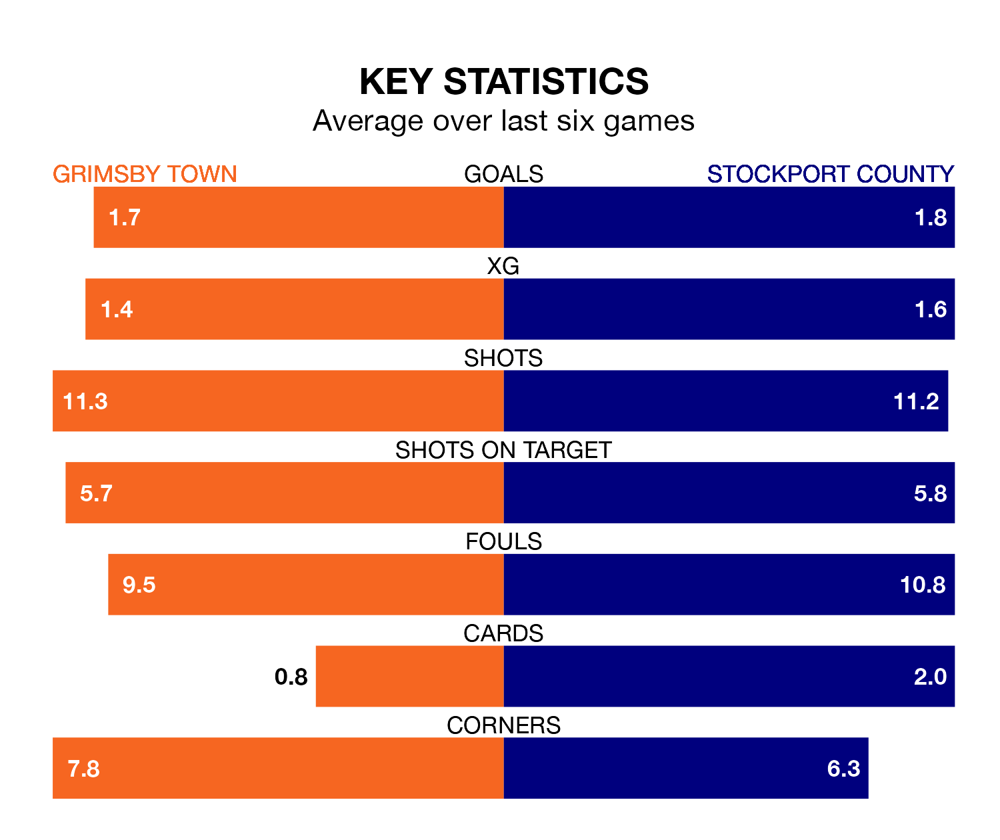

Stockport County are strong favourites to take all three points despite Grimsby Town's home advantage in Saturday's match at Blundell Park.
*Betting Company* are offering odds of 1.78 on Stockport sealing the win, with the visitors sitting first in EFL League Two table.
Grimsby, who are 20th in the league and 29 points behind the Hatters, are priced at 3.63 to win. A draw is set at 3.53.
With 62 goals in 29 games so far this season, Stockport are the league's highest scorers with 2.1 goals per game. And they are conceding fewer than average, letting in 29 goals at a rate of 1.0 per game.
Grimsby, meanwhile, are below average scorers, with 1.4 goals per game, compared to a league average of 1.5. They have conceded 1.8 goals per game.
In Ben Hinchiffe, County can rely on one of the league's safest pair of hands. He has kept 10 clean sheets in his 29 appearances this season, and only one other 'keeper – Mansfield Town's Christy Pym – has been able to prevent the opposition scoring on more occasions in EFL League Two.
In Town's net, Jake Eastwood has three clean sheets in 15 games. He has conceded a goal every 56 minutes, 70% more often than the 97 minutes between goals for Hinchiffe.
In the last 10 years, Grimsby and Stockport have played each other on six occasions. Grimsby won three of them, Stockport two, and they drew once.
On average, the Mariners scored 1.3 goals and the Hatters 1.5 in those matches.
Their last meeting was on October 21, when Stockport won 3-2 at home.
The Mariners are in disappointing form in EFL League Two, with one win and two draws from their last six games.
With two wins and three draws over that period, the Hatters' form is better – they have taken nine points from 18, compared to the home side's five.
Grimsby's last match was on February 3, a 0-0 draw against Accrington Stanley.
Stockport drew 1-1 with Harrogate Town last time out, also on February 3, with Connor Lemonheigh-Evans on the scoresheet.
Updated: 14:59 (UTC), 05/02/24